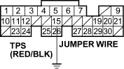
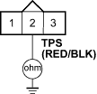
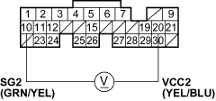

- At the wire harness side, check for continuity between TP sensor 3P connector terminal No. 2 and body ground.
TP SENSOR 3P CONNECTOR

Wire side of female terminals
Is there continuity?
YES - Repair short in the wire between the ECM (A15) and the TP sensor. 
NO - Go to step 12.
- Connect ECM connector terminal A15 and body ground with a jumper wire.
ECM CONNECTOR A (31P)

Wire side of female terminals

- At the wire harness side, check for continuity between TP sensor 3P connector terminals No. 2 and body ground.
TP SENSOR 3P CONNECTOR

Wire side of female terminals
Is there continuity?
YES - Substitute a known-good ECM and recheck (see page 11-5). If the symptom/indication goes away, replace the original ECM.
NO - Repair open in the wire between the ECM (A15) and the TP sensor.
- Measure voltage between ECM connector terminals A10 and A20.
ECM CONNECTOR A (31P)

Wire side of female terminals
Is there about 5 V?
YES - Repair open in the wire between the ECM (A20) and the TP sensor.
NO - Substitute a known-good ECM and recheck (see page 11-5). If the symptom/indication goes away, replace the original ECM.